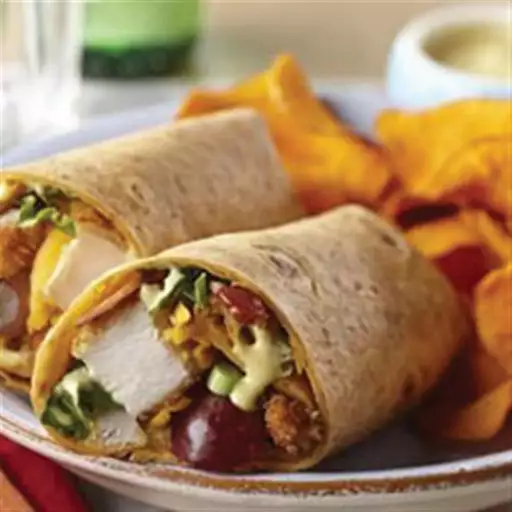

Chicken Wrap

Description:
Strips of delicious cooked chicken wrapped in a lightly toasted tortilla wrap with lettuce, mayo and salsa.
Add one or two sides plus a drink to make it a meal.
Ingredients:
- 1 pound boneless skinless chicken breasts
- 1 egg
- 1 cup panko crumbs
- ½ teaspoon Spice Islands® Fine Grind Sea Salt
- ¼ teaspoon Spice Islands® Fine Grind Black Pepper
- ½ teaspoon Spice Islands® Garlic Powder
- ½ teaspoon Spice Islands® Onion Powder
- ¼ cup Mazola® Corn Oil
- 8 slices bacon, cooked and crumbled
- 2 cups shredded lettuce
- 1 cup red grapes, halved
- ½ cup shredded Cheddar cheese
- 3 green onions, thinly sliced
- ⅓ cup sliced almonds
- 6 (10 inch) sun-dried tomato tortillas
- ½ cup mayonnaise
- 2 tablespoons yellow mustard
- 1 tablespoon Dijon mustard
- 2 tablespoons honey
- ½ tablespoon lemon juice
Steps:
- Pound chicken breasts, one at a time in a resealable freezer bag, until about 1/2-inch thick. Lightly beat egg in a shallow bowl. Combine panko crumbs, salt, pepper, garlic powder and onion powder in a separate shallow bowl.
Dip chicken breasts in egg until coated, drip off excess, and dip in panko mixture.
Press chicken into crumbs until fully coated. Heat oil in a large skillet on medium high heat.
Transfer chicken to pan and cook about 2 to 3 minutes per side or until chicken is brown, crispy and fully cooked.
Transfer to a plate and cut into strips.
-
Honey Mustard: Combine mayonnaise, yellow mustard, Dijon mustard, honey and lemon juice in a small bowl.
Combine desired amount of chicken, honey mustard, bacon, lettuce, grapes, shredded cheddar cheese, green onions and sliced almonds in tortillas.
Wrap up and serve.